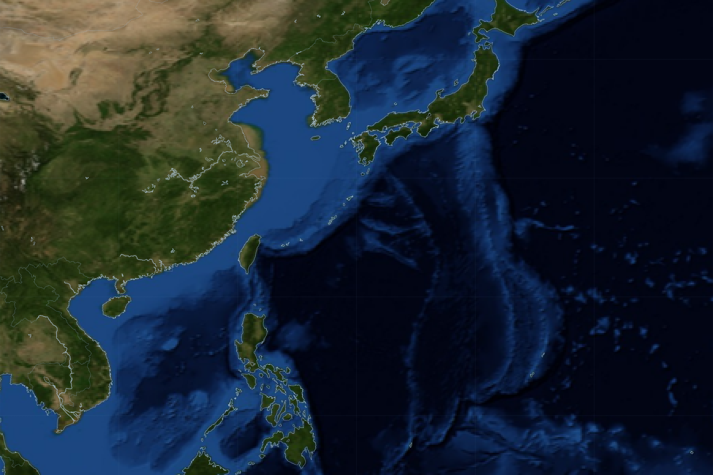

현재 태풍
-
기준 시각 -
중심기압
-
최대풍속
-
이동방향
-
이동속도
-
주요 거점 위험도
물류 거점 상태
항공편 운항 현황
대표 항공편
물류 노선 위험도
주요 노선
2일 예상 경로
태풍 이동 경로

태풍 데이터 사용 현황
JP JMA
일본기상청
현재위치 · 예상경로
기압 · 최대풍속
기본 태풍 경로
기압 · 최대풍속
KR KMA
한국기상청
예상경로
JMA 경로 편차 확인
예상경로 비교
JMA 경로 편차 확인
CN CMA
중국기상국
현재위치 · 기압 · 풍속
강풍반경
중국 측 현재 정보
강풍반경
US JTWC
합동태풍경보센터
예상경로 · 강풍반경
거점·노선 위험도
위험도 계산 핵심
거점·노선 위험도
예상경로 위치 차이 (JMA ↔ KMA)
평균 위치 차이
-
최대 위치 차이
-
같은 예보 시각의 JMA·KMA 예상 태풍 중심 위치 간 거리